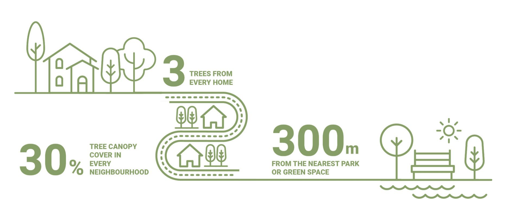

Capitolo 2 Introduzione
2.1 La rete ecologica
==[breve nota con alcuni elementi da riprendere dalla relazione precedente e con un aggiornamento alla situazione attuale]==
2.2 Il verde urbano
È noto che le aree urbane concentrano la maggior parte della popolazione mondiale e sono tra i contesti più esposti agli effetti dei cambiamenti climatici. In tali contesti, in particolare quelli dell’area mediterranea, sono evidenti soprattutto gli effetti negativi legati all’isola di calore urbana e alle ondate di calore (Konijnendijk 2023). Ad esempio si stima che nell’estate 2024 siano morte per cause attribuibili al caldo 62.775 persone in 32 paesi europei, con l’Italia come paese più colpito (oltre 19.000 decessi) (Janoš et al. 2025).
Alberi e spazi verdi urbani sono ampiamente riconosciuti come soluzioni basate sulla natura (NBS) che consentono di affrontare queste criticità, con contributi documentati alla salute pubblica, all’adattamento climatico, alla riduzione dell’inquinamento, alla conservazione della biodiversità e alla regolazione delle acque (Ferrari et al. 2019; Gill et al. 2007; Tzoulas et al. 2007; Pukowiec-Kurda 2022; Islam et al. 2012; Aronson et al. 2017). Tuttavia l’accesso a tali benefici non sempre è distribuito in modo uguale, ma anzi molto frequentemente la porzione di popolazione che include i più vulnerabili vive in quartieri con minore copertura arborea, con un minor numero di spazi verdi e in condizioni di temperature più elevate durante la stagione calda (cfr. Rigolon 2016; McDonald et al. 2021).
In risposta all’esigenza di linee guida semplici e basate sull’evidenza nel 2021 è stata proposta una sorta di regola per il verde urbano, denominata regola “3–30–300” che fissa tre soglie per ogni residente (Konijnendijk 2023). In sostanza, affinché un contesto urbano possa dirsi verde, salubre e resiliente è necessario che per ogni residente ci siano almeno tre alberi “ben sviluppati” visibili dalla casa, dalla scuola e dal luogo di lavoro (soglia 3). Inoltre, è richiesto che in ogni quartiere della città ci sia una copertura arborea complessiva non inferiore al 30% (soglia 30) e che ogni residente non si trovi a più di 300 m dal più vicino spazio di verde pubblico (soglia 300) (Fig. 2.1).

Figure 2.1: Schema della regola 3-30-300. Da UNECE (2022).
È interessante notare che queste tre soglie corrispondono a tre modalità distinte di esposizione alla natura: i) vedere la natura, ii) vivere in mezzo al verde e iii) usufruirne a scopo ricreativo e rigenerativo. Queste soglie non sono arbitrarie, ma si fondano su evidenze empiriche consolidate nella letteratura scientifica. Ad esempio, il valore del 30% di verde per ogni quartiere trova riscontro negli studi di Astell-Burt e Feng, che associano a tale soglia maggiori benefici per salute, sonno e salute mentale (Feng and Astell-Burt 2017), mentre i 300 m coincidono con la raccomandazione dell’Ufficio regionale europeo dell’OMS per uno spazio verde di estensione almeno pari a un ettaro (World Health Organization 2017). Ovviamente questa regola è una linea guida “volontaria”, da applicare con attenzione al contesto locale: tessuti urbani densi o con caratteri storici, congiuntamente a ulteriori fattori culturali, possono rendere difficile e inadeguata l’applicazione letterale delle soglie; la regola tuttavia resta un valido orientamento per una proiezione sostenibile dello sviluppo del tessuto urbano e periurbano.